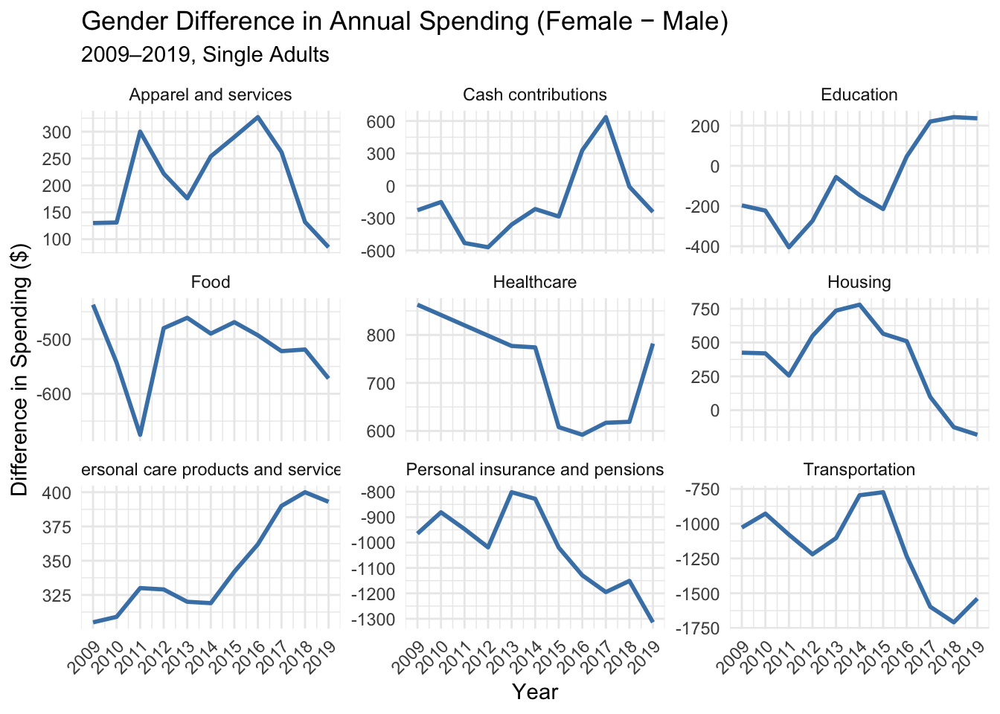
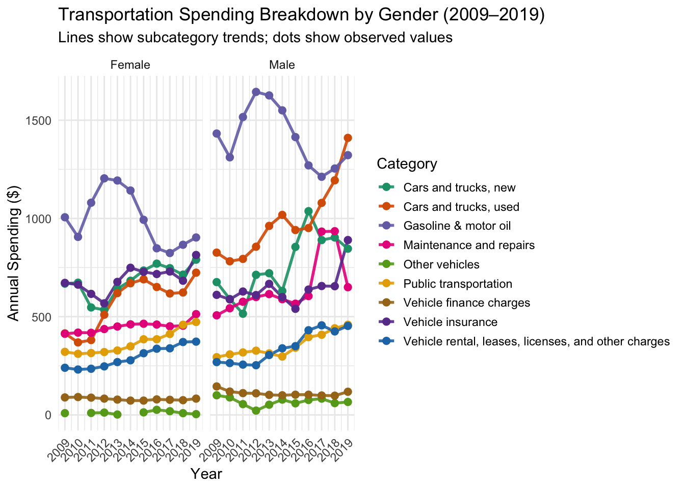
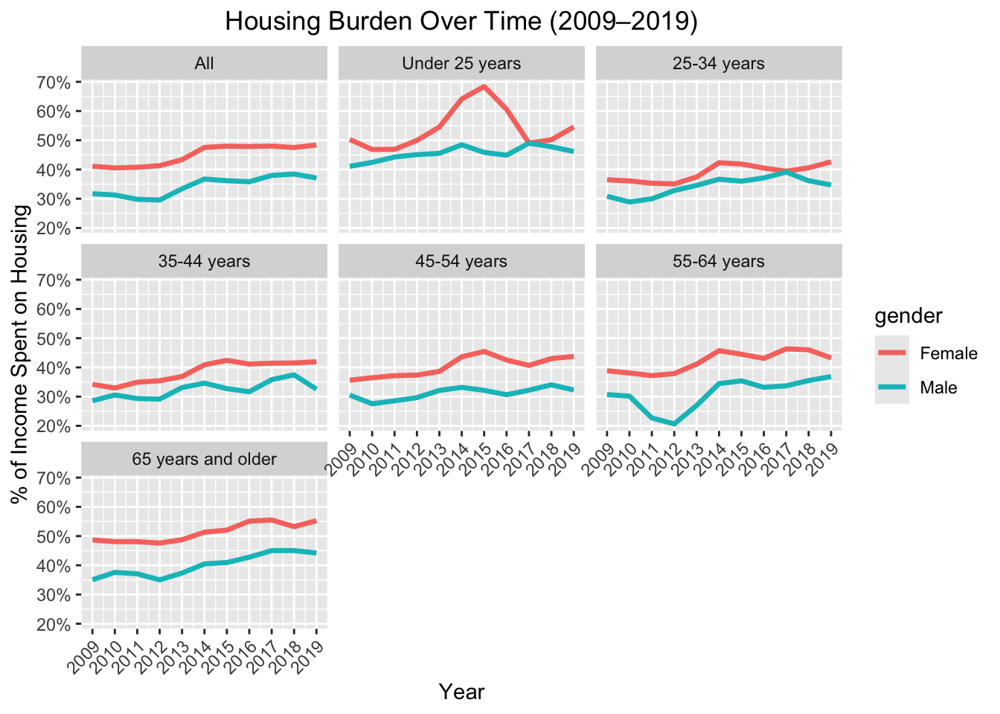
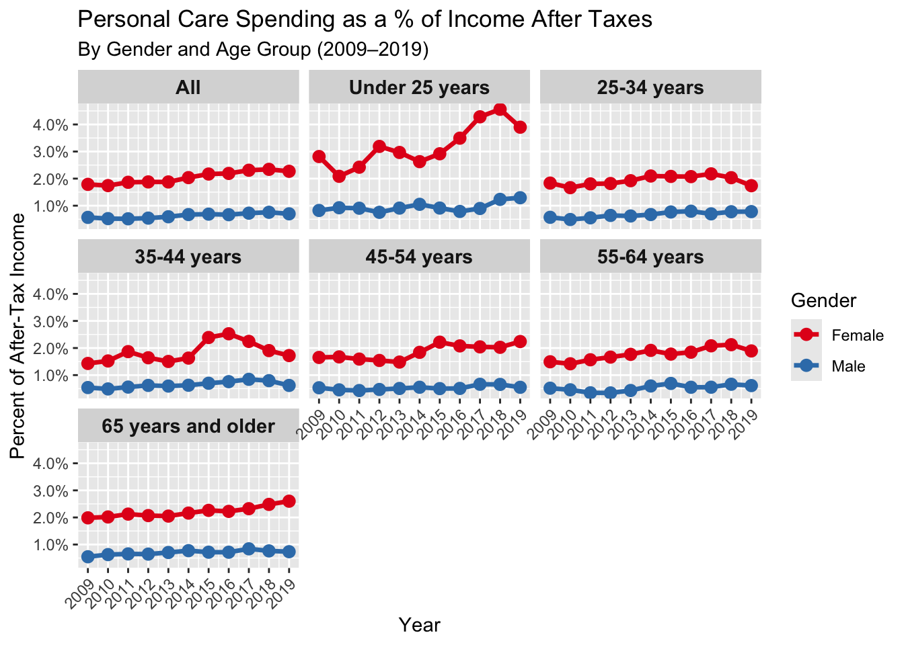
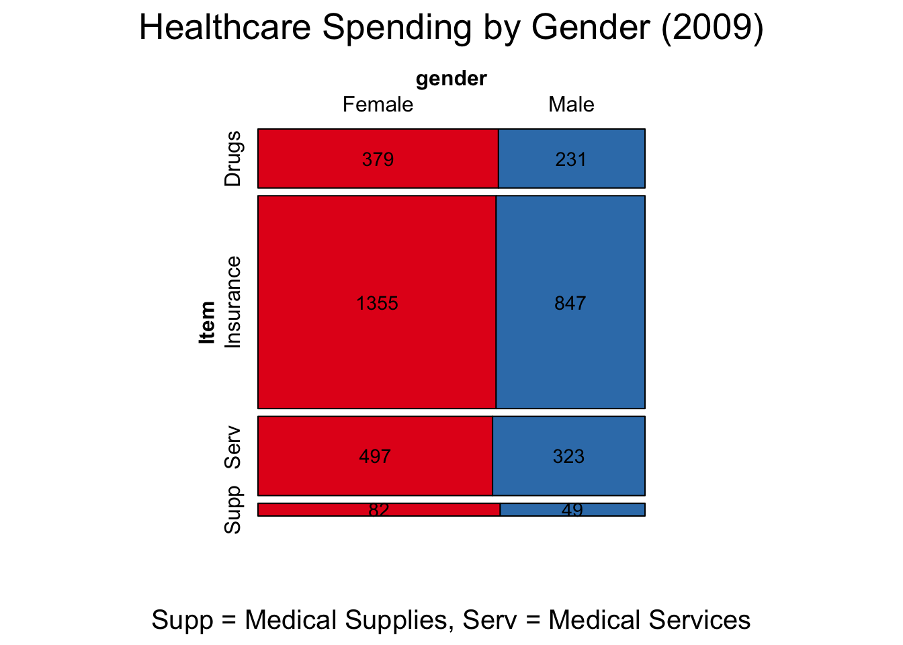
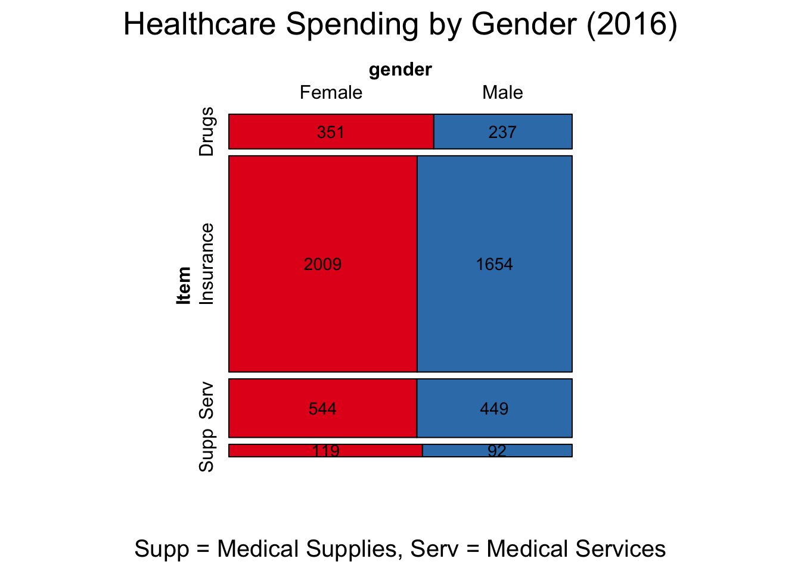
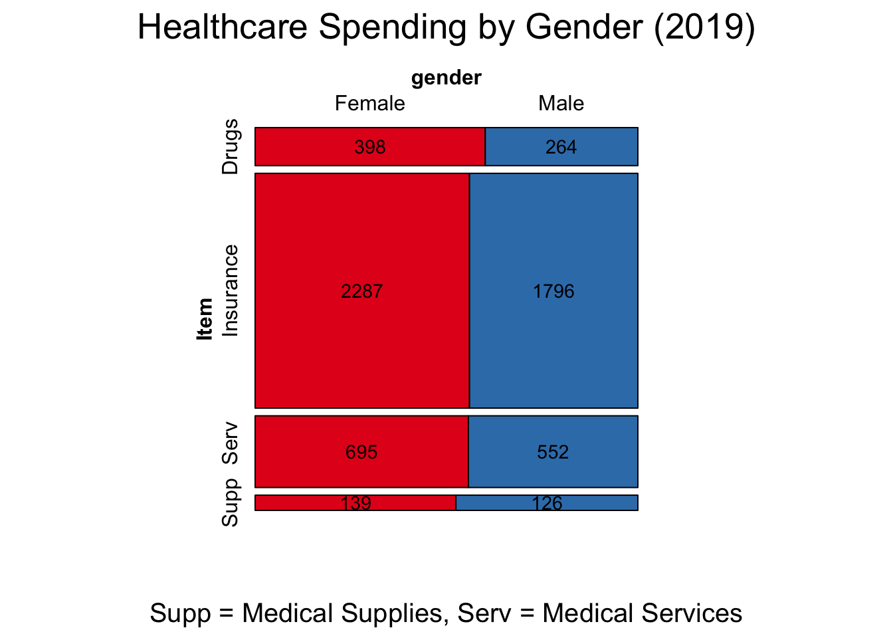
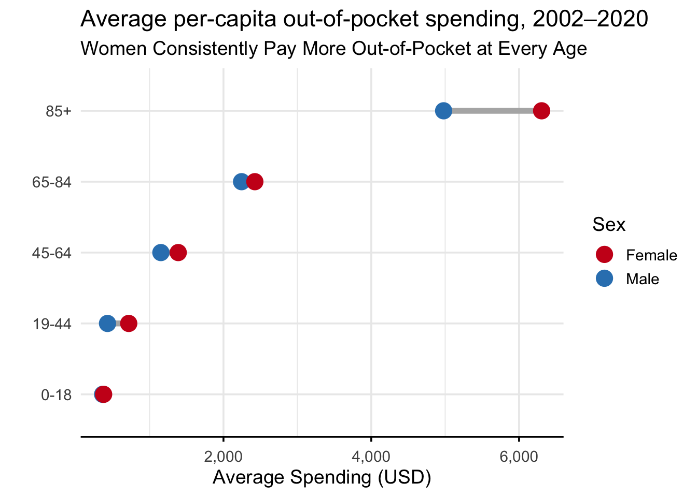
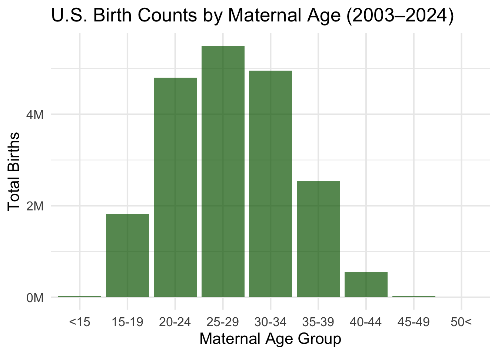
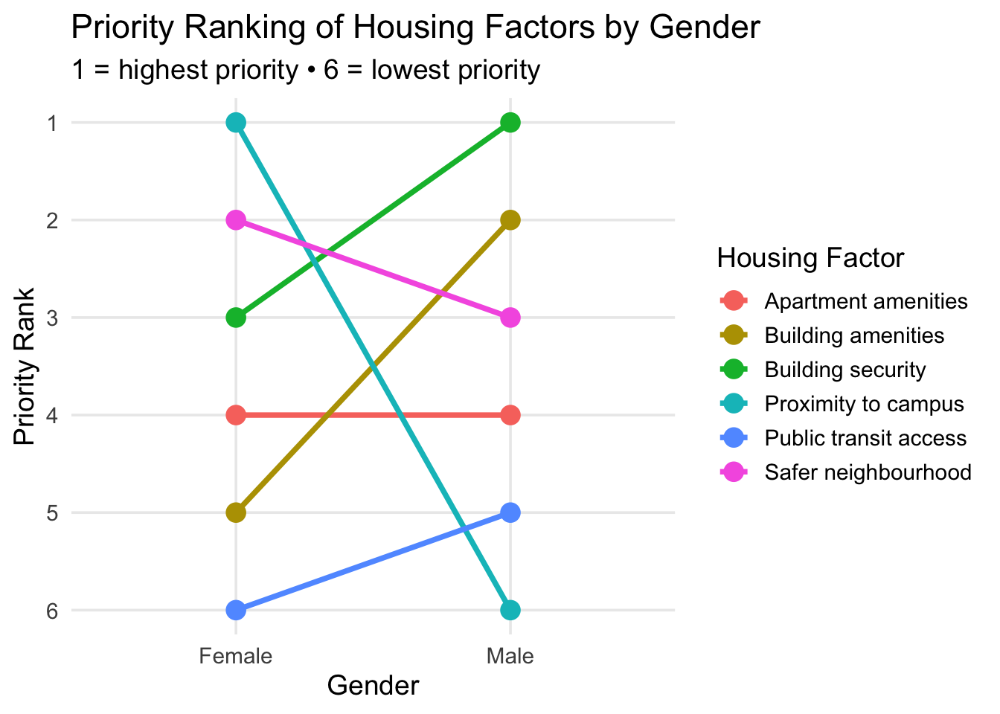

In this section, we present evidence of gendered cost burdens using Consumer Expenditure Survey (CES) for single males and females from 2009-2019, supplemented by healthcare data by gender and student survey data. Our results reveal consistent patterns in gendered spending and several noteworthy divergences in individual years and expenditure groups. Altogether, these patterns hint at ways gender shapes financial burdens across essential and discretionary spending categories.
Our first set of analyses compared total expenditures across major spending categories for single male and females in the 2009-2019 CES data. We specifically chose this time range as it was between the Great Recession and COVID-19, two events that play a strong influence on consumer spending and financial stability. We first wanted to get a high level picture of spending differences.
3.1 Cost Burden by Gender
4 Results
In this section, we present evidence of gendered cost burdens using Consumer Expenditure Survey (CES) for single males and females from 2009-2019, supplemented by healthcare data by gender and student survey data. Our results reveal consistent patterns in gendered spending and several noteworthy divergences in individual years and expenditure groups. Altogether, these patterns hint at ways gender shapes financial burdens across essential and discretionary spending categories.
Our first set of analyses compared total expenditures across major spending categories for single male and females in the 2009-2019 CES data. We first wanted to get a high level picture of spending differences.
Code
#Load in all 20 datasets for single females and males from 2009-2019library(tidyverse)#install.packages("readxl")library(readxl)# install.packages("janitor")library(janitor)files <-list.files("datasets/c", pattern ="*.xlsx", full.names =TRUE)manual_header <-c("Item","All","Under 25 years","25-34 years","35-44 years","45-54 years","55-64 years","65 years and older")clean_numeric <-function(x) { x |>str_replace("^[abc]/\\s*", "") |># remove a/, b/, c/ and any space afterna_if("") |># empty string → NAas.numeric()}read_cex_file <-function(filepath) {# Extract gender + year using regex gender <-if (str_detect(filepath, "females")) "Female"else"Male" year <-str_extract(filepath, "\\d{4}") |>as.numeric()# Read raw raw <-read_excel(filepath, col_names =FALSE)# Extract row 3 as header# header <- as.character(raw[2, ])# header[header == "" | is.na(header)] <- paste0("unknown_", seq_len(sum(header == "" | is.na(header))))names(raw) <- manual_header# Add metadata df <- raw |>slice(47:229) |># <— keep only rows 47–183 janitor::remove_empty("cols") |>filter(!(Item !=""&if_all(-Item, is.na))) |>filter(Item !="Average annual expenditures")# filter(!if_all(everything(), is.na)) |> # <— remove fully-NA rows gift_start <-which(df$Item %in%c("Gifts of goods and services","Gifts of goods and services, total")) gift_end <-which(df$Item =="All other gifts")if (length(gift_start) ==1&&length(gift_end) ==1) { df <- df[-(gift_start:gift_end), ] } df <- df |>mutate(gender = gender,year = year ) |>mutate(across(-c(Item, gender, year), clean_numeric)) return(df)}df_main <-map_df(files, read_cex_file)
Code
library(dplyr)library(tidyr)df_long <- df_main |>pivot_longer(cols =-c(Item, gender, year), names_to ="age_group",values_to ="expenditure" ) |>mutate(age_group =factor( age_group,levels =c("All","Under 25 years","25-34 years","35-44 years","45-54 years","55-64 years","65 years and older" ),ordered =TRUE ) )df_missing <- df_longdf_long <- df_long |>mutate(Item =case_when( Item %in%c("Gasoline, other fuels, and motor oil","Gasoline and motor oil") ~"Gasoline & motor oil", Item %in%c("Public transportation","Public and other transportation") ~"Public transportation", Item %in%c("Males, 2 and over","Men and boys") ~"Men and boys", Item %in%c("Boys, 2 to 15", "Men, 16 and over") ~"Men and boys", Item %in%c("Females, 2 and over","Women and girls") ~"Women and girls", Item %in%c("Girls, 2 to 15", "Women, 16 and over") ~"Women and girls",TRUE~ Item ) )
We observed that women consistently spend more in essential categories tied to health, personal care, and household expenses, whereas men tend to have higher spending patterns on more discretionary categories. This initial foundation set the stage for deeper exploration on how the gendered cost burdens have evolved over time and within specific subcategories.
Code
df_gender_wide <- df_major |>pivot_wider(names_from = gender,values_from = expenditure )df_gender_wide <- df_gender_wide |>mutate(gender_diff = Female - Male # positive = women pay more )ggplot(df_gender_wide |>filter(age_group =="All"),aes(x = year, y = gender_diff, color = Item)) +geom_line(size =1, color ="steelblue") +facet_wrap(~ Item, scales ="free_y") +labs(title ="Gender Difference in Annual Spending (Female − Male)",subtitle ="2009–2019, Single Adults",x ="Year",y ="Difference in Spending ($)" ) +theme_minimal() +theme(axis.text.x =element_text(angle =45, hjust =1),legend.position ="none" ) +scale_x_continuous(breaks =seq(2009, 2019, 1))

To get a better breakdown of the above plot, we broke up the data to look at year-by-year changes for each category. In this way, we were able to point out specifically in which year we see significant highs or lows in spending differences. An unexpected observation was that spending on transportation was consistently higher for men than women, and this difference has gotten more extreme in recent years. As expected, differences in spending on personal care products and services are positive and seem to be increasing, and the same goes for healthcare. Surprisingly, differences in spending on apparel look to be going in a downward direction after spiking in 2016. From this, some elements we want to investigate further include:
Why is transportation such a high expense for males? What is the housing burden by gender (% of income spent on housing-related expenses)? How does spending on personal care products vary by age group? What is the distribution of spending patterns for apparel and services by gender? What is the distribution of spending patterns for healthcare sub-categories by gender?
Why do males have higher transportation-related expenses?
Code
transport_items <-c("Cars and trucks, new","Cars and trucks, used","Other vehicles","Gasoline & motor oil","Vehicle finance charges","Maintenance and repairs","Vehicle rental, leases, licenses, and other charges","Vehicle insurance","Public transportation")big_palette <-c("#1b9e77", "#d95f02", "#7570b3", "#e7298a", "#66a61e","#e6ab02", "#a6761d", "#6a3d9a","#1f78b4")df_transport <- df_long |>filter(Item %in% transport_items) |>filter(age_group =="All")df_transport_summary <- df_transport |>group_by(year, gender, Item) |>summarise(exp =mean(expenditure, na.rm =TRUE),.groups ="drop")ggplot(df_transport_summary,aes(x = year, y = exp, color = Item)) +geom_line(size =1.0, alpha =0.9) +# ← LINESgeom_point(size =2.2) +# ← DOTS ON EVERY POINTscale_color_manual(values = big_palette) +# your 20-color palettefacet_wrap(~ gender) +labs(title ="Transportation Spending Breakdown by Gender (2009–2019)",subtitle ="Lines show subcategory trends; dots show observed values",y ="Annual Spending ($)",x ="Year",color ="Category" ) +theme_minimal() +theme(axis.text.x =element_text(angle =45, hjust =1),legend.key.size =unit(0.5, "cm"),legend.position ="right" ) +scale_x_continuous(breaks =seq(2009, 2019, 1))

Code
target <-"Public transportation"
Transportation emerged as an unexpected category where men consistently spent more than women. Looking deeper into spending patterns for subgroups under transportation, men spend significantly more on vehicle purchases, gasoline insurance, and maintenance.
The amount spent on public transportation is roughly the same for both men and women, which is also surprising to see as men typically seem to have other methods of transportation at their disposal. This is seen by looking at the expenses males spend around purchasing a vehicle. This aligns with the notion that vehicle ownership rates are generally higher for men and men are more likely to own multiple vehicles whereas women tend to stick more to public transit options. This finding adds a layer of nuance to the narrative of universal female economic burden as it shows men have disproportionate costs in categories tied to mobility and car ownership. Some gendered differences can arise out of lifestyle, commute demands, or even cultural norms rather than just structural inequity.
Housing burden over time shows structural inequity
Next, we looked at housing burden, defined as the proportion of housing expenditures to income after taxes
Code
ggplot(df_hi_wide, aes(x = year, y = housing_burden, color = gender)) +geom_line(size =1.2) +facet_wrap(~ age_group) +scale_y_continuous(labels = scales::percent) +scale_x_continuous(breaks =seq(min(df_hi_wide$year), max(df_hi_wide$year), 1)) +labs(title ="Housing Burden Over Time (2009–2019)",y ="% of Income Spent on Housing",x ="Year" ) +theme(axis.text.x =element_text(angle =45, hjust =1),plot.title =element_text(hjust =0.5) )

Using line plots across the 11 years, we found that women consistently showed a higher housing burden than men, despite the difference in spending by gender declining in recent years. This peaks for both genders around the post-recession recovery period, but the rise is sharper for women. This suggests that women who earn less on average face a greater strain proportionally for housing needs, even when absolute spending is comparable to that of men. The fact that we see this consistently across all age groups further confirms our sentiment.
Personal Care spending widens over the decade
As noted early, spending on personal care has only increased over the years with a gap that continues to widen. To better understand this, we investigated personal care as a percent of income. When normalized by income we noticed that women still allocate an extra 2-3% of their share of income to personal care than men. This cost burden disproportionately increased for women in 2018.
Code
df_pc_income <- df_long |>filter( Item %in%c("Personal care products and services", "Income after taxes"), )df_pc_income_wide <- df_pc_income |>select(year, gender, age_group, Item, expenditure) |>pivot_wider(names_from = Item,values_from = expenditure )df_pc_income_wide <- df_pc_income |>select(year, gender, age_group, Item, expenditure) |>pivot_wider(names_from = Item,values_from = expenditure )df_pc_income_wide <- df_pc_income_wide |>mutate(pct_budget_pc =`Personal care products and services`/`Income after taxes` )ggplot(df_pc_income_wide,aes(x = year, y = pct_budget_pc, color = gender)) +geom_line(size =1.2) +geom_point(size =2.8) +scale_y_continuous(labels = scales::percent_format(accuracy =0.1)) +scale_x_continuous(breaks =seq(2009, 2019, 1)) +scale_color_manual(values =c("Female"="#E41A1C", "Male"="#377EB8")) +facet_wrap(~ age_group) +labs(title ="Personal Care Spending as a % of Income After Taxes",subtitle ="By Gender and Age Group (2009–2019)",x ="Year",y ="Percent of After-Tax Income",color ="Gender" ) +theme(axis.text.x =element_text(angle =45, hjust =1),strip.text =element_text(size =11, face ="bold") )

When stratified by age group, we noticed that younger women spend a larger share of their income on personal care. After 54 years, there seems to be a convergence in spending patterns, suggesting that appearance-related economic pressures may disproportionately target younger women. This aligns with broader socioeconomic research on gendered expectation around appearance, grooming, and social presentation.
Code
library(dplyr)library(vcd)health_items <-c("Health insurance","Medical services","Drugs","Medical supplies")gender_colors <-c(Female ="#E41A1C", Male ="#377EB8")#FIRST YEARdf_mosaic_1 <- df_long |>filter( year ==2009, age_group =="All", Item %in% health_items ) |>select(Item, gender, expenditure) |>rename(Freq = expenditure)# 1) Turn into a table of dollar amountstab <-xtabs(Freq ~ Item + gender, data = df_mosaic_1)rownames(tab) <-recode(rownames(tab),"Health insurance"="Insurance","Medical services"=" Serv","Medical supplies"="Supp")mosaic( tab,labeling = labeling_values,labeling_args =list(labels = tab, gp_text =gpar(cex =0.9, col ="black") ),highlighting ="gender",highlighting_fill = gender_colors,direction =c("h", "v"),main ="Healthcare Spending by Gender (2009)",sub ="Supp = Medical Supplies, Serv = Medical Services")

Code
#SECOND YEARdf_mosaic_2 <- df_long |>filter( year ==2016, age_group =="All", Item %in% health_items ) |>select(Item, gender, expenditure) |>rename(Freq = expenditure)# 1) Turn into a table of dollar amountstab <-xtabs(Freq ~ Item + gender, data = df_mosaic_2)rownames(tab) <-recode(rownames(tab),"Health insurance"="Insurance","Medical services"=" Serv","Medical supplies"="Supp")mosaic( tab,labeling = labeling_values,labeling_args =list(labels = tab, gp_text =gpar(cex =0.9, col ="black") ),highlighting ="gender",highlighting_fill = gender_colors,direction =c("h", "v"),main ="Healthcare Spending by Gender (2016)",sub ="Supp = Medical Supplies, Serv = Medical Services")

Code
#THIRD YEARdf_mosaic_3 <- df_long |>filter( year ==2019, age_group =="All", Item %in% health_items ) |>select(Item, gender, expenditure) |>rename(Freq = expenditure)# 1) Turn into a table of dollar amountstab <-xtabs(Freq ~ Item + gender, data = df_mosaic_3)rownames(tab) <-recode(rownames(tab),"Health insurance"="Insurance","Medical services"=" Serv","Medical supplies"="Supp")mosaic( tab,labeling = labeling_values,labeling_args =list(labels = tab, gp_text =gpar(cex =0.9, col ="black") ),highlighting ="gender",highlighting_fill = gender_colors,direction =c("h", "v"),main ="Healthcare Spending by Gender (2019)",sub ="Supp = Medical Supplies, Serv = Medical Services")

Another pattern we noticed was the consistently high spending gap within healthcare. Females have consistently spent more on healthcare than men. To better understand this, we looked at expenditure for specific subcategories of healthcare across three time points. 2009 and 2019 had a very wide difference, whereas 2016 had a much lower but still positive difference. We wanted to better understand the breakdown when the spending gap was very high vs very low. Looking at the results, the proportion females spend on drugs remains consistently higher compared to males, even though population has increased and patterns in other subcategories have changed. This aligns with the sentiment that women spend more on prescription medications as they are prescribed them at a higher rate than men. The specifics on out-of-pocket vs insurance cost differences that may arise from this will be discussed later.
Apparel spending for men vs women
Apparel is a topic commonly associated with female spend costs. From the first plot, we clearly saw that this connotation holds, but we wanted to better understand the extent to which the spending difference held up, especially across younger age groups (ie. Do single females under 25 spend more money on apparel for children under 2 years compared to single males?).
It is interesting to see that the results do not vary much by age group. There is a pretty consistent pattern of women spending on apparel for women and men spending money on apparel for men. It is interesting to see that there has been an upward trend in recent years of how much men under 25 spend on apparel for women. Young men under 25 are already incentivized to spend money on apparel for women due to social norms around gift giving and expressions of care, but the recent rise in e-commerce and targeted marketing could play a role in the recent rapid rise. Though a bit different from traditional household or healthcare expenditure burdens, this does hint at a voluntary financial outflow that men disproportionately bear.
It is also interesting to see that single women are spending more on apparel for small children compared to men. This difference is especially apparent in the 25-34 age range and could be due to the fact that women in this age group are more likely to have primary custody of children and as a result bear the majority of expenses associated with raising children. This includes but is not limited to apparel-related expenses.
4.1 Healthcare Cost Burden
We noticed that healthcare spending always had positive values for the spending gap and since healthcare spending is inevitable, it makes it an uncontrollable burden, which is why we wanted to delve deeper into the healthcare cost burden by gender.
Firstly, to visualize if there was a cost burden on the healthcare spending, we used CMS.gov’s Total per-capita Health Expenditure by Age and Sex dataset (including Medicare, Medicaid, Private Health Insurance, and Out of pocket) to plot horizontal bar charts faceted over years using the difference in values (Female - Males). We found that most of the bars were positive for all the age groups except for 65-84, and 0-18. This means that most women have been spending more than men for years.
Code
library(readxl)library(dplyr)library(tidyr)library(ggplot2)file_path <-"datasets/healthcare_spendings.xlsx"target_groups <-c("0-18","19-44","45-64","65-84","85+")years <-c("2002","2004","2006","2008","2010","2012","2014","2016","2018","2020")# ---------- READ TABLE 7 ----------df7 <-read_excel(file_path, sheet ="Table 7", skip =3)# KEEP ONLY LEVELS (dollars) COLUMNS (first 11 columns only)df7 <- df7[, 1:11]names(df7)[1] <-"AgeGroup"# FIX numeric columns (remove commas)df7[2:11] <-lapply(df7[2:11], function(x) as.numeric(gsub(",", "", x)))# ---------- EXTRACT MALE & FEMALE BLOCKS (exact positions) ----------male_start7 <-which(df7$AgeGroup =="Males") # row 13female_start7 <-which(df7$AgeGroup =="Females") # row 21male_block7 <- df7[(male_start7+1):(male_start7+7), ]female_block7 <- df7[(female_start7+1):(female_start7+7), ]# Filter desired age groups ONLYmale_clean7 <- male_block7 |>filter(AgeGroup %in% target_groups)female_clean7 <- female_block7 |>filter(AgeGroup %in% target_groups)# Ensure same ordermale_clean7$AgeGroup <-factor(male_clean7$AgeGroup, levels = target_groups)female_clean7$AgeGroup <-factor(female_clean7$AgeGroup, levels = target_groups)# ---------- PIVOT TO LONG ----------male_long7 <- male_clean7 |>pivot_longer(all_of(years), names_to ="Year", values_to ="Male")female_long7 <- female_clean7 |>pivot_longer(all_of(years), names_to ="Year", values_to ="Female")df_long7 <- male_long7 |>left_join(female_long7, by =c("AgeGroup","Year")) |>mutate(Year =as.integer(Year),Gap = Female - Male )# df7_long must contain: AgeGroup, Year, Male, Female, Gapdf7_gapplot <- df_long7 |>mutate(FemaleAdj = Female - Male) |>distinct(AgeGroup, Year, .keep_all =TRUE)library(scales)ggplot(df7_gapplot, aes(y = AgeGroup)) +geom_col(aes(x = FemaleAdj), fill ="#6baed6", alpha =0.8) +geom_vline(xintercept =0, color ="black", linewidth =1) +facet_wrap(~Year, ncol =5) +scale_x_continuous(labels =label_comma()) +labs(title ="Gender Difference in Total Per-Capita Health Care Spending",subtitle ="Female − Male spending \nBars to the right of zero show where women spend more.",x ="Difference in Spending (USD)",y ="" ) +theme_minimal(base_size =12) +theme(panel.grid.major.y =element_blank(),panel.grid.minor =element_blank(),axis.line.x =element_line(color ="black", linewidth =1),axis.ticks.x =element_line(color ="black"),strip.text =element_text(face ="bold"),legend.position ="none" )
To summarize the spending gap, we used the dumbbell graph which shows the average healthcare cost burden over the span of 18 years. It helped us see how high the gap was for the age group 85+ and 19-44 on average
Since the above two graphs included insurance and out-of-pocket data, it left room for some questions like how much the burden is when there is no support. To help us understand this, we use the Out-of-pocket spending data from the same website.
We used a line chart to plot the spending gap (Female − Male per-capita out-of-pocket spending), which showed all the values were positive. Upon hovering over the line, we could also see the exact amount difference that year. Except for the age group 0-18, which mostly includes children dependent on parents/guardians, the graphs showed positive lines for all age groups. The values fluctuate throughout the span of 18 years, but never go below zero, which means there has been a healthcare cost burden on women for a long period of time.
To summarize the burden and the spending gap, we used the dumbbell graph. The dots representing average female spending are ahead of those for average male spending across all age groups over the 18-year span, which tells us that women have had to spend more out of pocket over the years.
Code
# ---------- AVERAGE SPENDING ---------- df_avg71 <- df_long71 |>group_by(AgeGroup) |>summarise( AvgMale =mean(Male, na.rm =TRUE), AvgFemale =mean(Female, na.rm =TRUE) )# Create long format with Sex column for easy legenddf_avg71_long <- df_avg71 |> tidyr::pivot_longer(cols =c(AvgMale, AvgFemale),names_to ="Sex",values_to ="AvgSpend" ) |>mutate(Sex =recode(Sex,"AvgMale"="Male","AvgFemale"="Female") )ggplot(df_avg71_long, aes(y = AgeGroup, x = AvgSpend, color = Sex)) +# Dumbbell connecting segmentgeom_segment(data = df_avg71,aes(x = AvgMale, xend = AvgFemale,y = AgeGroup, yend = AgeGroup),color ="gray70", linewidth =2 ) +# Points for each sexgeom_point(size =5) +# Nice legend colorsscale_color_manual(values =c("Male"="#3182bd", "Female"="#cb181d"),name ="Sex" ) +scale_x_continuous(labels =label_comma()) +labs(title ="Average per-capita out-of-pocket spending, 2002–2020",subtitle ="Women Consistently Pay More Out-of-Pocket at Every Age",x ="Average Spending (USD)",y ="" ) +theme_minimal(base_size =14) +theme(axis.line.x =element_line(color ="black"),axis.ticks.x =element_line(color ="black"),legend.position ="right" )

We noticed a pattern in the spending gap in all the graphs; it was the highest in the age group 85+ and the second highest in the age group 19-44.
For the age group 85+, we noticed the spending gap is extreme. This could be because of the higher life expectancy of women as compared to men. (Zarulli V et al, 2018). Even though this is a per-capita data, we think the men who exist in this dataset show “survival bias,” which means because women live longer, the men who survived for this age group are already healthy or need less medical support.
The other age group that showed a high spending gap was 19-44, which made us question whether the 19-44 gap had something to do with the “biological clock” and the evolutionary expectation from women to reproduce. With the help of CDC’s Natality data, we were able to visualize that most women give birth between the ages of 20 and 34, while the age groups 15-19 and 40-44 show significant birth counts. This age range is consistent with the 19-44 category we see in both out-of-pocket and total health care spending graphs, where the spending gap is high.
Code
library(readr)library(dplyr)library(ggplot2)b1 <-read_csv("datasets/Natality_2003_2006.csv")b2 <-read_csv("datasets/Natality_2007_2024.csv")births_raw <-bind_rows(b1, b2)#cleaningbirths_clean <- births_raw |>select(Age =`Age of Mother 9`, Births) |>filter(!is.na(Age), Age !="Total") |># CLEAN & SHORTEN AGE LABELSmutate(Age =trimws(Age),Age =recode(Age,"Under 15 years"="<15","15-19 years"="15-19","20-24 years"="20-24","25-29 years"="25-29","30-34 years"="30-34","35-39 years"="35-39","40-44 years"="40-44","45-49 years"="45-49","50 years and over"="50<" ) ) |>group_by(Age) |>summarise(Births =sum(Births, na.rm =TRUE)) |>ungroup() |>mutate(Age =factor( Age,levels =c("<15","15-19","20-24","25-29","30-34","35-39","40-44","45-49","50<") ) )ggplot(births_clean, aes(x = Age, y = Births)) +geom_col(fill ="darkgreen", alpha =0.7) +scale_y_continuous(labels =function(x) paste0(x /1e6, "M")) +labs(title ="U.S. Birth Counts by Maternal Age (2003–2024)",x ="Maternal Age Group",y ="Total Births" ) +theme_minimal(base_size =16)

To further analyse the cost burden on women, we decided to see if it holds true for a small dataset. We wanted to see if there is a gendered cost burden midst people in similar situations. In our case, it was the fall 2025 cohort of data science graduate students at columbia university. Our survey received 31 responses are graphed below.
While apparel and hygiene costs are relatively similar across both genders, we see more extreme outliers in the higher range for women. We also see that there is more variability in rent for females compared to males. These extra outliers in the $2,500-3,000 range suggest that more women may be incentivized to spend extra on rent if it means prioritizing safety. We will take a look at this more in the next plot.
Code
library(ggplot2)library(dplyr)# Compute average priority rank for each gender + factordf_bump <- df_rank_long |>group_by(gender, factor) |>summarise(mean_rank =mean(rank, na.rm =TRUE), .groups ="drop") |>group_by(gender) |>mutate(priority =rank(mean_rank, ties.method ="first")) |># 1 = highest priorityungroup()ggplot(df_bump, aes(x = gender, y = priority, group = factor, color = factor)) +geom_line(linewidth =1.3) +geom_point(size =4) +scale_y_reverse(breaks =1:6) +# 1 at toplabs(title ="Priority Ranking of Housing Factors by Gender",subtitle ="1 = highest priority • 6 = lowest priority",x ="Gender",y ="Priority Rank",color ="Housing Factor" ) +theme_minimal(base_size =14) +theme(legend.position ="right",panel.grid.minor =element_blank() )

Women valuing proximity to campus and neighborhood safety aligns with higher rents. Women may prioritize being closer to school or in safer neighborhoods, even if it’s more expensive, which explains the observed high outliers.
Surprisingly, building security was ranked higher among men. Women may consider neighborhood safety more important than the building’s security features (cameras, doormen), whereas men might feel neighborhood safety is less critical and focus more on tangible security measures.
4.1.1 Reference
Zarulli V, Barthold Jones J, Oksuzyan A, et al. Women live longer than men even during severe famines and epidemics. Proc Natl Acad Sci U S A. 2018;115(4):E832–E840. doi:10.1073/pnas.1701535115